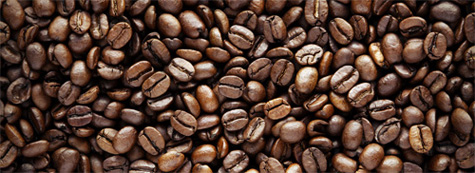
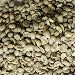
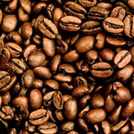
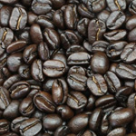
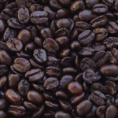

Coffee Beans

- Coffea Arabica (Arabica)
This species makes up about 70% of the world market for coffee beans.
Being a higher value taste, this fancy grade coffee bean is sold mostly
through specialty coffee shops.
- Coffea canephora (Robusta)
This high caffeine content species makes up about 27% of the world coffee
bean market. Being a cheaper to produce coffee bean but with a lower taste
profile, this coffee is often sold for use in instant coffee.
- Coffea liberica Bull. ex Hiern.
This species, grown in Malaysia, Liberia and the Ivory Coast, makes up
about 3% of the world coffee bean market.
Different roasts of coffee

Light Roast |

Medium Roast |

Medium to Dark |

Dark Roast |